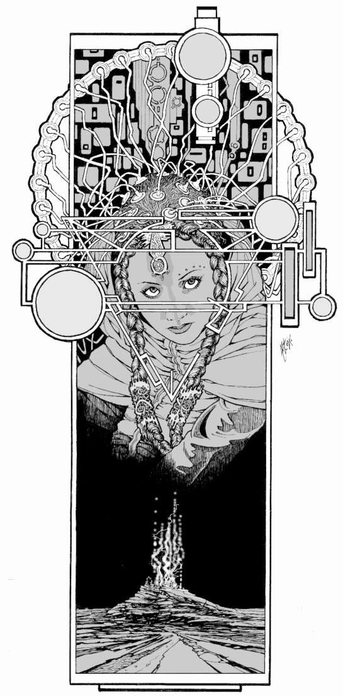

Story Title
Story Subtitle, If Any
by
Story Author

- Following the title:
- A spoiler warning if it gives away the end of another work not obviously connected.
- Links to preceding stories, if any
- Links to succeeding stories, if any
- Sample Table of Contents:
- , etc.
About the table of contents: if the story is short enough to easily be read at one sitting, omit it. Otherwise, it seems a good idea to give the reader easy places to bookmark, even if the story isn't so long that it's naturally divided into chapters. "Ex Machina" is just north of 7000 words and I divided it into 4 parts for easy bookmarking, as the story lent itself to that division.
If the author has not divided the story, remove the ', etc.' above and divide the story into as many sections as seems reasonable, where it seems reasonable. The code above produces a table of contents that simply consists of Roman numerals. The links are made by putting <h6 id="partN">N<h6> around the appropriate Roman numeral N, as you can see with part I just below.
If the author has provided divisions, use them. If he has provided subtitles, adjust the markup and use them too.
Part I
Body text.

The lesser separator is generally the scene breaker.
Part II
Example large in-story illo.
Part III
More body text.